ポートフォリオ
プロフィール
私の名前はH・Aと言います。年齢は23歳です。
趣味は、アニメ鑑賞、ゲームです。
2025年8月～現在までは就労移行支援アップル梅田を利用しています。
アップル梅田で取り組んでいる訓練は、プログラミングによるアプリ開発、
ipaの情報セキュリティマネジメントの資格の取得勉強、複数人で行うビジネスマナーなど
を行っています。
障害状況
私の障害は、自閉スペクトラム症候群(ASD)です。
主な特性は、コミュニケーション能力の欠如、一般常識との認知のずれです。
配慮事項
-
報告書等をまとめるのに時間がかかってしまうため、記述する時には、
箇条書きなどの短い文章にさせて頂けると助かります。
-
説明をして頂く時は、具体的な内容を伝えてほしいです。
また、専門用語は分かりやすい言葉に置き換えてもらうと
助かります。
-
周りの影響で精神が不安定になってしまいます。
- 一人の業務の時は、イヤホンをつけて作業をさせてほしいです。
- 精神が不安定になれば、10分～30分程度クールダウンをさせてほしいです。
-
他の人が怒られている姿を見ないために、壁側の席または、
透明なアクリル等で視界を遮断してほしいです。
など
学歴
2018年4月：金光藤陰高等学校普通科ITライセンスコース入学
2022年3月：金光藤陰高等学校普通科ITライセンスコース卒業
2022年4月：清風情報工科学院入学
2025年3月：清風情報工科学院卒業
最終学歴：2025年3月 清風情報工科学院卒業
学習歴
専門学校では、C言語、PHP、SQL、Java、Javasqript、C#を学習しました。
アップル梅田では、PHP(Laravel)を学習しました。
C言語、PHP、PHP(Laravel)でのプログラム開発を主にしていました。
スキル・資格
- 2020年12月：プレゼンテーション作成検定2級 合格
- 2021年7月：日本語ワープロ検定2級 合格
- 2021年7月：情報処理技能検定表計算1級 合格
- 2021年12月：ホームページ作成検定2級 合格
- 2022年7月：Microsoft Office Specialist Word 2019 Associate 合格
- 2022年10月：情報活用試験2級合格
- 2023年1月：Microsoft Office Specialist Excel 2019 Associate 合格
- 2023年2月：ITパスポート 合格
- 2024年6月：基本情報技術者 合格
- 2025年7月：C言語プログラミング能力認定試験2級 合格
- 現在は、ipaの情報セキュリティマネジメントの資格取得に向けて勉強しています。
制作物
➀ボブジテン
アプリの概要
- ボブジテンはお題に沿ってカタカナを使わない、
ジェスチャーなどで相手に伝えるゲームです。
- PCを使ってお題を出すことができます。
- お題は自分で制作や編集が可能です。
開発環境
フロントエンド HTML、CSS
バックエンド PHP、SQL
データベース MySQL
機能一覧
開発期間
2026年1月19日～2026年1月23日
約1週間です。
苦労したこと
- アプリ開発は久しぶりだったので忘れていることが
多かったので大変でした。
アプリURL
ボブジテンアプリはgithubに公開しております。
動作をしたい場合は、githubからダウンロードをし、
環境構築をしてください。
URL:https://github.com/arr-ke/bob
ボブジテンアプリ画像
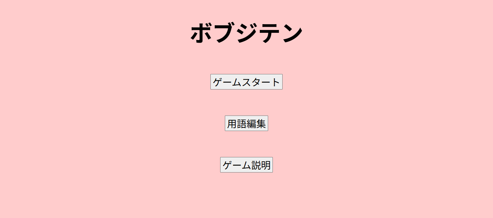
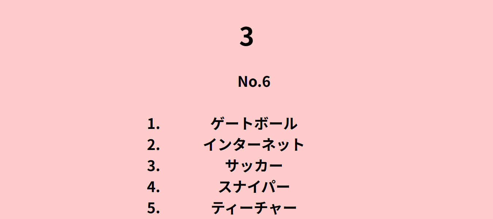
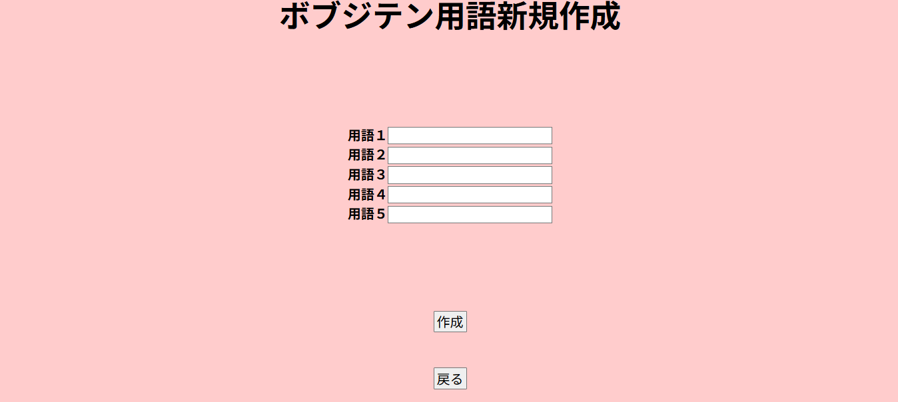
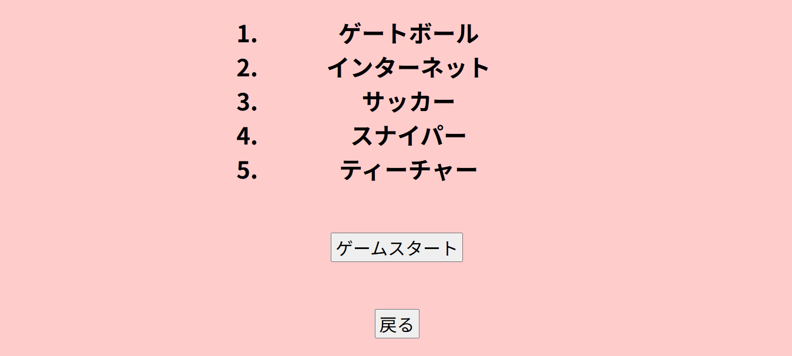
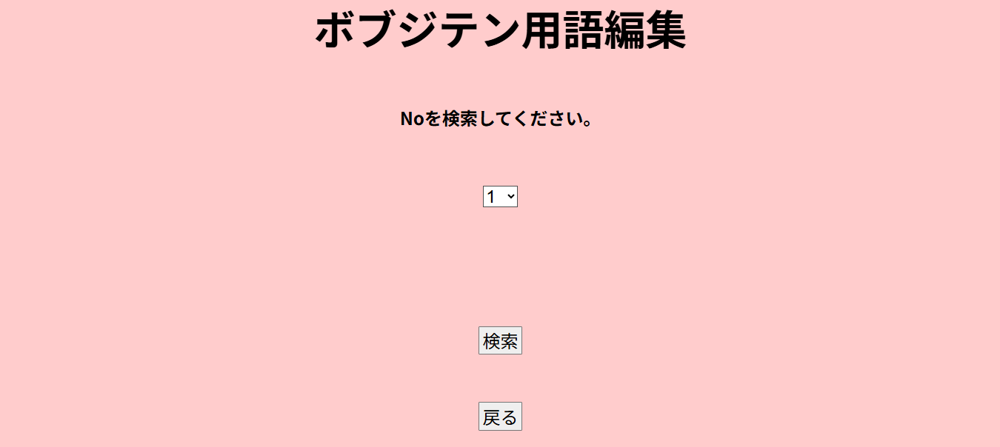
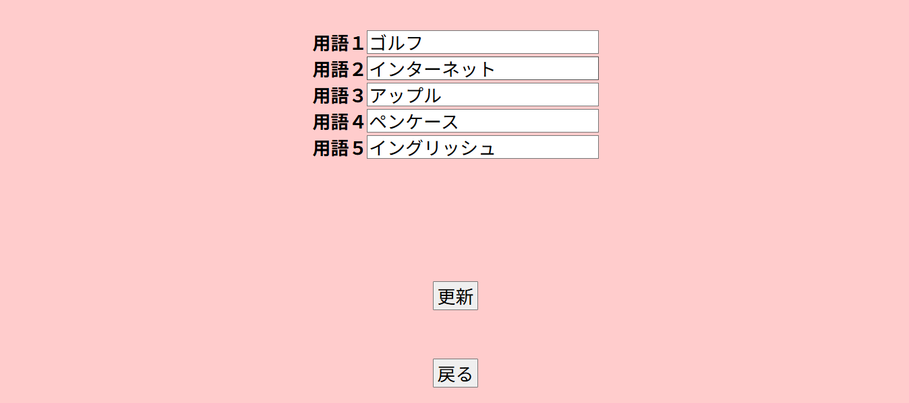
➁メモ帳
アプリの概要
- メモの作成ができます。
- メモの編集をすることができます
開発環境
フロントエンド HTML、CSS、Javascript
バックエンド PHP(Laravel)、SQL
データベース MySQL
機能一覧
- ログイン・ログアウト機能
- ユーザー登録機能
- メモ新規登録機能
- メモ編集機能
- メモ削除機能
- メモタイトル検索機能
開発期間
2026年3月2日～2026年5月7日
約2か月です。
苦労したこと
- エラーが発生した時の原因特定をする時でした。
-
Laravelでのアプリ開発は初めてなので
分からないことが多かったです。
アプリURL
メモアプリはgithubに公開しております。
動作をしたい場合は、githubからダウンロードをし、
環境構築をしてください。
URL:https://github.com/arr-ke/memo
メモ帳アプリ画像
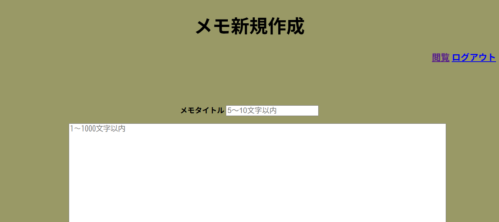
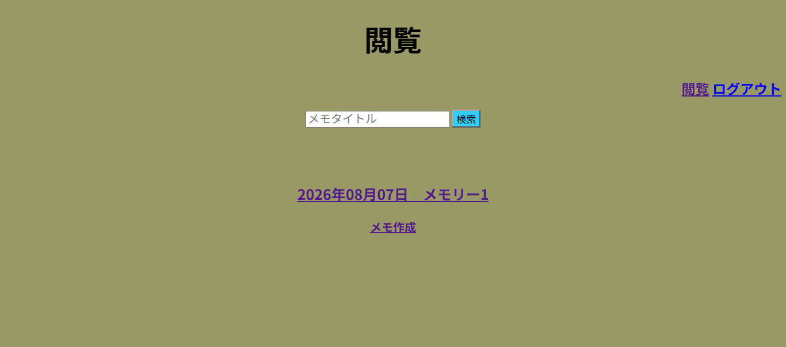
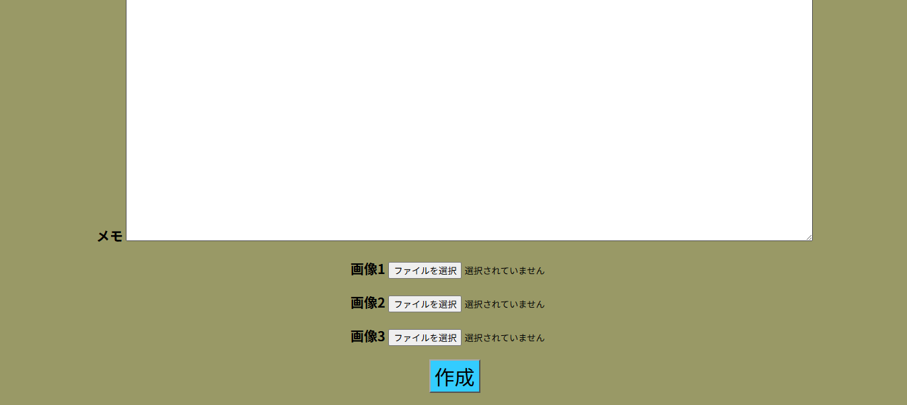
➂掲示板
アプリの概要
- 掲示板の作成ができます。
- 掲示板へのコメント、画像投稿ができます。
- コメント投稿の時にユーザー名とは別名で投稿ができます。
- コメントの編集ができます。
開発環境
フロントエンド HTML、CSS、Javascript
バックエンド PHP(Laravel)、SQL
データベース MySQL
機能一覧
- 未ログイン
- 未ログイン掲示板一覧機能
- 未ログイン掲示板検索機能
- 未ログイン掲示板閲覧機能
- ユーザー登録機能
- ログイン機能
- エラー機能
- ログイン
- ログアウト機能
- ユーザー編集機能
- 掲示板一覧機能
- 掲示板検索機能
- 掲示板閲覧機能
- 掲示板コメント作成機能
- 掲示板コメント編集機能
- エラー機能
開発期間
2026年5月13日～2026年8月5日
約3か月です。
苦労したこと
- エラーが発生した時の原因特定をする時でした。
- 開発する機能が多いので全体的に大変でした。
アプリURL
掲示板アプリ画像
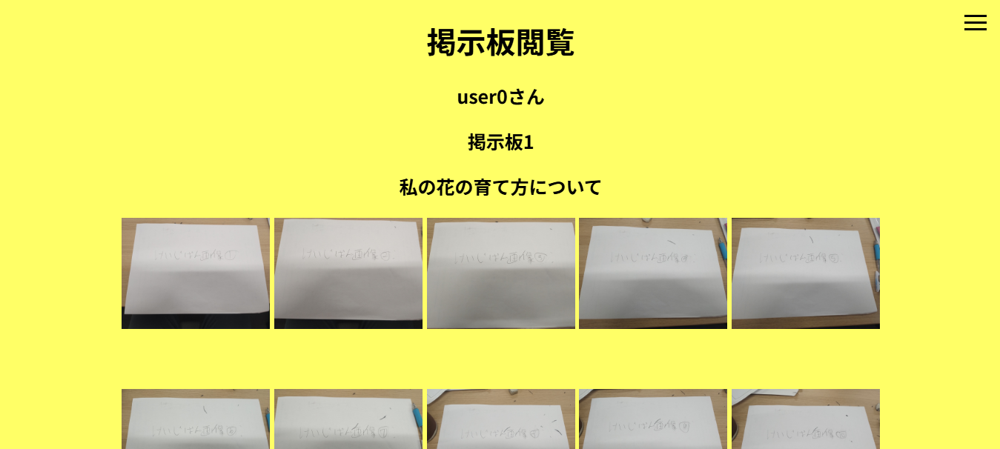
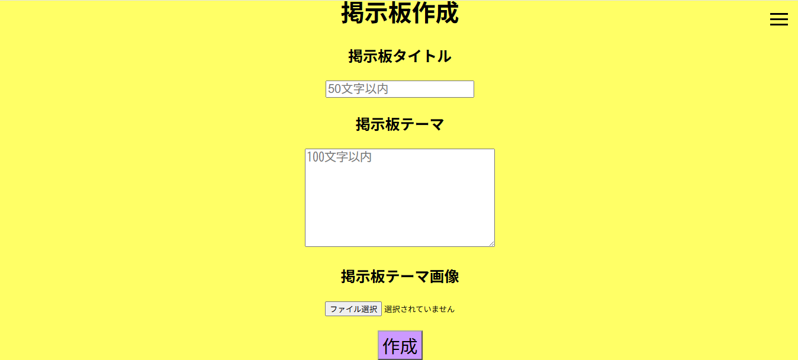
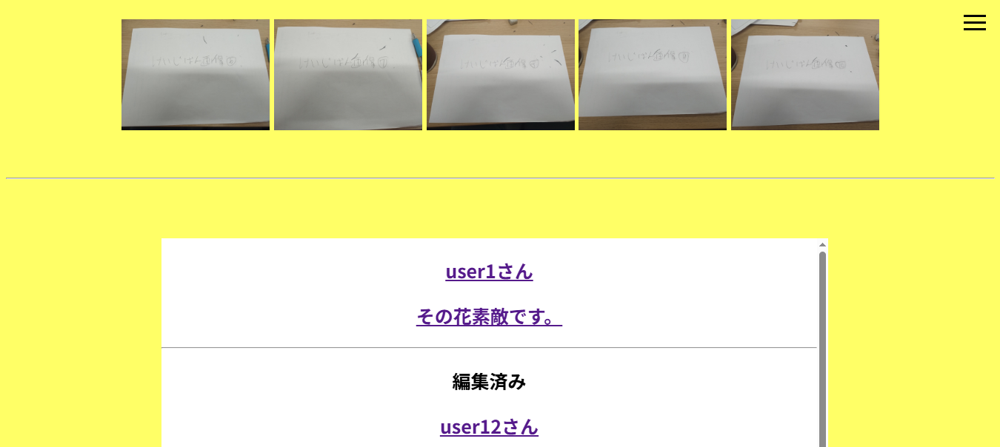
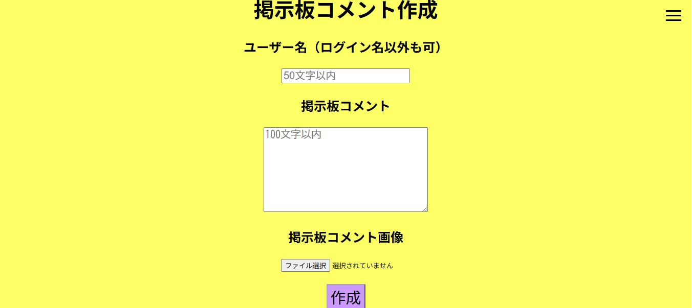
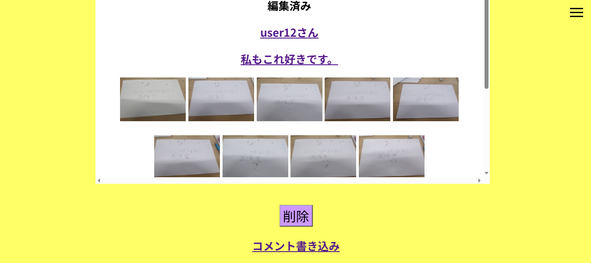